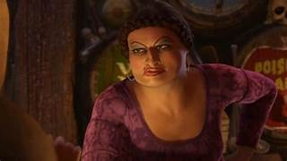

En los últimos años muchas veces incluyeron personajes LGBTIQ+ en series y películas. Normalmente a muchas personas estos personajes no les gustaron por sentirse forzados a decir que son LGBTIQ+ para ser notados, pero hubo personajes LGBTIQ+ que agradaron al público. ¿Cuál era la diferencia de ese personaje que sí le gustó a la gente respecto de los otros?
Doris es una de las hermanastras malvadas de la saga de Shrek, que es muy querida por los fans de las películas. Doris es un personaje que exagera en ser gay, pero es más como un chiste sobre la comunidad LGBTIQ+. Una de las razones por las que es tan querida es que es un chiste dentro de la misma saga, pero no lo mencionan tanto ni le dan tanta importancia. Eso es algo que lo hace ver muy natural y no sentirse forzado a decir que es gay.

El jugador 120 o Cho Guyn-ju de *El Juego del Calamar* es otro personaje de la comunidad LGBTIQ+ que es querido por muchos. Como en el caso de Doris, el jugador 120 no se siente forzado. A lo largo de la serie, sus acciones hacen que nos olvidemos de si es gay o no. Eso hace que sea más natural, ya que no está recordándotelo a cada rato.

En este caso, Velma de la serie *Velma* es odiada por muchas cosas, como el rediseño de personajes, su historia y sus chistes. Pero una de las mayores razones de que sea odiada es porque es de la comunidad LGBTIQ+. Una de las razones de que sea criticada por ser lesbiana es que originalmente no lo era, incluso teniendo una relación con Shaggy, otro personaje querido de *Scooby-Doo*. Otra de las razones es que se siente forzado que sea lesbiana y su relación con Daphne se percibe forzada por la historia.
¿Qué diferencia a estos personajes?
¿Por qué algunos son queridos y otros no? Eso depende de varios factores que los pueden hacer apreciados o rechazados, tales como no sentirse forzados, que no lo recuerden a cada momento, la personalidad de ese personaje y que eso no arruine la historia de la película o serie. En cuanto cumpla estos requisitos, puede que no sea odiado. Aunque haga todo bien, siempre va a haber alguien a quien no le guste ese personaje por ser de la comunidad LGBTIQ+, sea bueno o no. ¿Pero cómo sería un personaje LGBTIQ+ que sea bien recibido en el cine?
- Que no sea su personalidad completa: cuando un personaje te recuerda a todo momento que es LGBTIQ+ y no tiene nada más que lo haga importante, hace que sea fácilmente odiado por ser molesto y sin nada relevante.
- Que sea natural: lo mejor para que sea recibido es que no lo diga muchas veces y que no se vea como un estereotipo de personaje LGBTIQ+. Que no actúe exageradamente como uno, sino que vista normal, hable normal y tenga algo propio que lo represente además de eso.
- Tener historia: normalmente los personajes LGBTIQ+ en las series y películas no tienen historia, y lo único que los representa es ser de la comunidad LGBTIQ+. La mayoría solo están para ser inclusivos, pero eso hace que no sean del agrado de muchos.